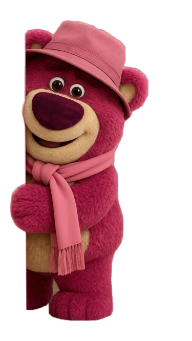
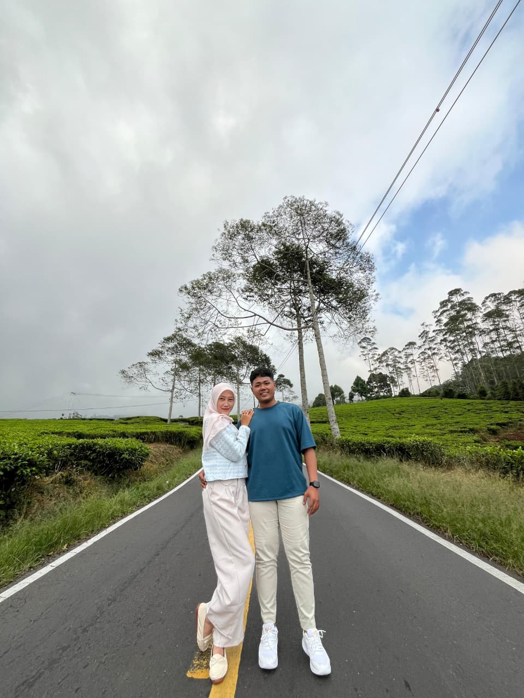
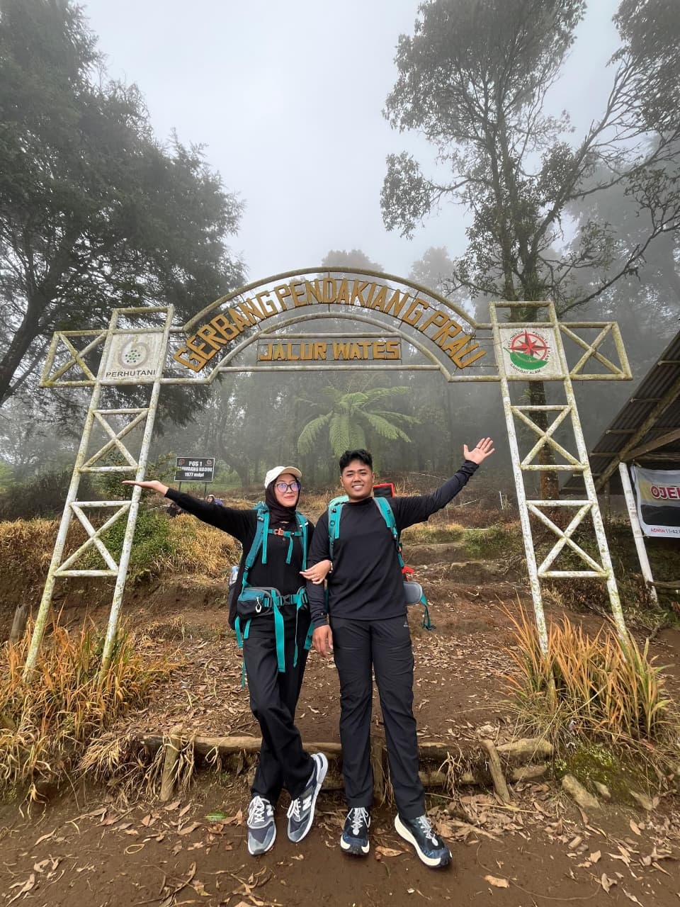

Hati Kamu
0%


Aku tau akhir-akhir ini aku banyak bikin hati kecil kamu sedih. Aku cuma minta waktu sebentar buat baca ini.

Aku sadar mungkin aku terlalu sering bikin kamu kecewa. Aku ga akan membela diri. Aku cuma mau ngaku kalau aku memang salah.

Aku tahu kata maaf ga langsung menghilangkan rasa kecewa. Tapi aku benar-benar ingin berubah.


Sayanggg...
Aku tahu mungkin kata maaf dariku sekarang sudah nggak berarti banyak buat kamu. Aku juga sadar bahwa rasa kecewa yang kamu rasakan bukan sesuatu yang bisa hilang hanya dengan beberapa kalimat permintaan maaf.
Aku benar-benar minta maaf atas semua kesalahan yang sudah aku lakukan, atas sikapku yang mungkin selama ini menyakiti kamu, membuat kamu kecewa, bahkan sampai membuat kamu kehilangan kepercayaan kepadaku. Aku nggak mau mencari alasan atau membenarkan kesalahanku, karena aku tahu aku memang punya banyak hal yang seharusnya bisa aku lakukan dengan lebih baik.
Jujur, aku masih ingin memperjuangkan hubungan ini. Aku masih ingin memperbaiki semuanya, bukan hanya karena aku takut kehilangan kamu, tetapi karena aku sadar bahwa aku sudah menyia-nyiakan seseorang yang begitu berarti dalam hidupku.
Aku tahu kamu mungkin sudah lelah, sudah terlalu banyak memendam kecewa, dan mungkin sudah nggak punya keinginan untuk kembali. Aku nggak akan memaksamu untuk menerima aku lagi. Aku hanya ingin kamu tahu bahwa penyesalanku kali ini bukan sekadar ucapan.
Kalau masih ada sedikit saja kesempatan, aku ingin membuktikan lewat tindakan bahwa aku bisa menjadi seseorang yang lebih baik untukmu. Aku nggak meminta kamu langsung percaya lagi, karena aku tahu kepercayaan harus dibangun kembali, bukan diminta begitu saja.
Aku nggak bisa menjanjikan bahwa aku akan menjadi manusia yang sempurna, tetapi aku berjanji akan belajar dari kesalahan ini dan berusaha sungguh-sungguh untuk nggak mengulanginya.
Sekali lagi, maafkan aku. Aku masih ingin kita, tetapi kali ini aku ingin memperjuangkannya dengan cara yang lebih dewasa, lebih tulus, dan lebih menghargai perasaanmu.
Love you so much, Berlian Harpanda ❤️

Terima kasih sudah membaca semuanya. Semoga setelah ini kita bisa sama-sama memperbaiki semuanya.❤️